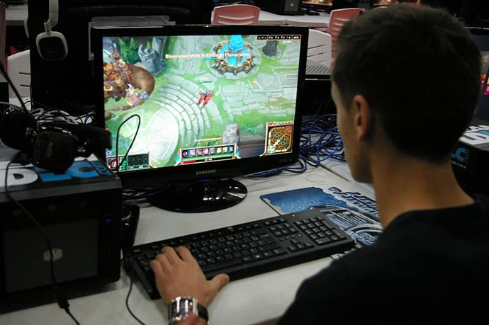

A casual gamer is not specifically somebody who plays “casual games”, if such things can be said to exist. Rather, a casual gamer has a casual attitude to gaming. It is something of a light hobby, used primarily to unwind and relax. This person won’t really know very much about gaming, as they will not actively attempt to research anything. Most of what they know is what they might pick up on by word of mouth (including what a friend might have said on Facebook). They are the equivalent of someone going to the cinema and watching whichever film "they heard was good". Their motivation towards relaxation over "challenge" means that they may be drawn to simpler games and systems with additional features. Many of them are drawn to devices where gaming is not the focus but rather a bonus feature, such as smartphones. This is the audience who bought the Wii for Wii Sports, Wii Fit, and not much else. From what we have seen of it (so far) this is the audience the Xbox One is hoping to attract with their TV features. It is, however, unclear how successful this strategy will be for Microsoft, since casual gamers tend to be fickle with what they will support with their money.
A social gamer is one who is motivated by connecting with other people through the medium of gaming. Their gaming habits are determined by their social circle more than by what is generally popular in society. These are, by and large, the kinds of people you will find almost exclusively playing multiplayer games ranging from first person shooters like Call of Duty, MMOs like World of Warcraft, MOBAs like League of Legends, and cooperative worldbuilders like Minecraft. Any game with a strong online community is very attractive to them. The distinguishing element between the casual and social gamer is not in the games they play, but rather in the motivations for playing them. To use the movie example again, it is the person who watches a movie primarily because it is something their friends have seen or want to see. Part of this is to not feel "out of the loop", but this can also be because they often share similar tastes with their friends and so they trust their judgement.
The specialist gamer knows what they like. What they like may be shooters, RPGs, MOBAs, strategy, platformers, or really any genre. It could be a specific developer or even a specific franchise. It could even be just one single game. What sets a specialist apart is the focus on getting the most out of their gaming experience. They will trade variety over quality. They are not looking to play every game, they are looking to truly and fully play every part of specific games. Nintendo has traditionally courted this kind of gamer with its long-running and caringly-developed franchises. The person who played Super Metroid so much they can finish the game in less than two hours with everything. The person who has logged hundreds of hours in every Animal Crossing game. The person who spent the better part of a month breeding their Pokemon team to have the specific natures so they can be the very best.
The expert gamer is not specifically someone who is highly skilled at games. Instead they are characterised by a wide range of tastes and a desire to enjoy new gaming experiences. They probably enjoy reading about games, researching games, and following the video game industry. Gaming is quite likely a topic of conversation in their group of friends. Unlike the social gamer, however, their gaming habits expand beyond just what their friends play. They try a little bit of everything and have their own tastes, rather than going along with the group. They likely have strong opinions but also educated ones with facts and research to back them up.  The expert gamer enjoys reading gaming-related websites, posting on gaming forums, watching trailers and "Let's Plays". They will likely spend more time researching a game before it is released than they will end up playing it once it is. They devour game conferences (by watching them live or attending them in person) to be able to know about as many games as possible.